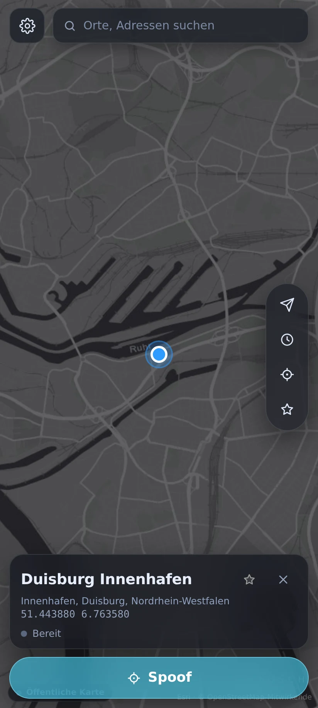

01
Ort auf der Karte wählen
Suche einen Ort, tippe auf die Karte oder ziehe den Marker. Dein gewählter Standort ist sofort im Blick.
Ein Ort, eine Route, ein neuer Blick auf die Karte. Fusch setzt einen simulierten Android-Standort systemweit, plant Wege über echte Straßen und lässt dich jederzeit wieder stoppen. Ohne Root.

Eine klare Oberfläche für den Moment, in dem du einen anderen Ort brauchst – mit direkter Kontrolle über den laufenden Vorgang.
Suche einen Ort, tippe auf die Karte oder ziehe den Marker. Dein gewählter Standort ist sofort im Blick.
Start und Ziel festlegen, Gehen, Fahrrad oder Auto auswählen und die Route über echte Straßen berechnen.
Während ein Standort oder eine Route aktiv ist, zeigt die App nur den Status und den Stop-Button.
Favoriten durchsuchen, sortieren und umbenennen. Dein Verlauf hält gestartete Standorte und Routen fest.
Mit sichtbarer Android-Dauerbenachrichtigung und Stop-Aktion – auch wenn du Fusch verlässt.
Die App begleitet dich durch Standort-Berechtigung, Entwickleroptionen und Mock-Standort-Auswahl.
Neue Aufnahmen der tatsächlich in der APK enthaltenen Oberfläche. Mit Beispieldaten – kein Bildgenerator, kein behaupteter Live-Spoof.
Die Ansichten wurden aus der UI der signierten 2.9-APK in einer mobilen Browser-Testumgebung mit Beispieldaten aufgenommen. Die Online-Karte darunter lädt echte Kartendaten.
Bewege die Karte, wähle einen Punkt oder zeige mit deiner Erlaubnis deinen aktuellen Standort. Kartenausschnitte werden online von CARTO mit OpenStreetMap-Daten geladen.
51.43441, 6.76233Die Karte lädt nur, wenn du diesen Bereich ansiehst.
Die Website ändert keinen Gerätestandort. „Mein Standort“ nutzt nur nach deiner Zustimmung die Browser-Ortung; die Kartenkacheln lädt dein Browser vom Kartenanbieter.
Kein Root, kein Konto. Android braucht nur einmal die Auswahl von Fusch als App für simulierte Standorte.
Die aktuelle Fusch-APK laden und öffnen. Android kann dich bitten, die Installation aus dieser Quelle zu erlauben.
In den Entwickleroptionen unter App für simulierte Standorte auswählen Fusch festlegen. Die App führt dich dorthin.
Ort antippen oder Route planen, dann starten. Währenddessen sind in Fusch nur Status und Stop bedienbar.
Keine versteckten Voraussetzungen. Und keine Versprechen, die Android nicht halten kann.
Nein. Diese 2.9 ist anders signiert. Wer die bisherige 2.5 installiert hat, muss sie vor der Installation von 2.9 deinstallieren. Dabei gehen lokal gespeicherte Fusch-Daten verloren. Die separat signierten 2.6 bis 2.8 verwenden dagegen denselben neuen Schlüssel wie 2.9.
Nein. Android kennzeichnet Mock-Standorte; andere Apps können die Simulation erkennen. Fusch umgeht solche Prüfungen nicht.
Die App lädt Kartenmaterial online und berechnet Straßen-Routen über OSRM. Die interaktive Karte auf dieser Website nutzt CARTO-Kacheln mit OpenStreetMap-Daten. Dafür ist eine Internetverbindung erforderlich.
Hier bekommst du die aktuelle, separat signierte Fusch-Version. Ein Download, klare Versionsdaten und der direkte Weg zum GitHub-Release.
Fusch 2.9 herunterladenDie neue 2.9 hat eine andere Signatur und kann nicht über 2.5 installiert werden. Alte App zuerst deinstallieren; dabei werden ihre lokal gespeicherten Daten gelöscht. Sie ist kein automatisches Update für 2.5.
8b19784f699c13fd1fe8052aedae52e554618638d1c7ee7cd0d34ffb34c599bc